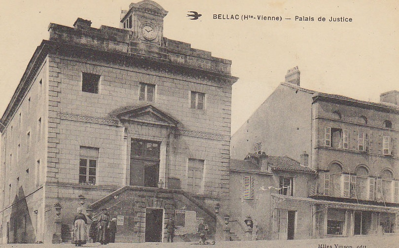
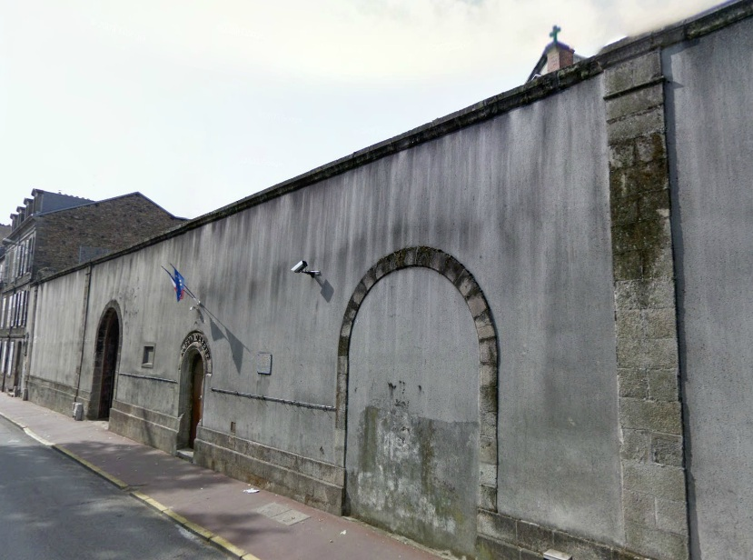
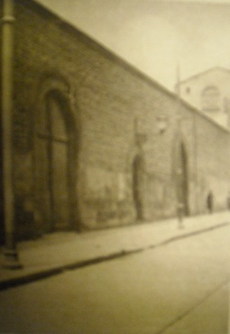
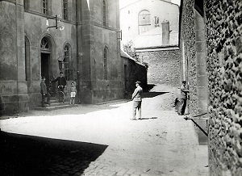
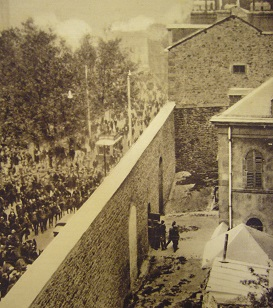
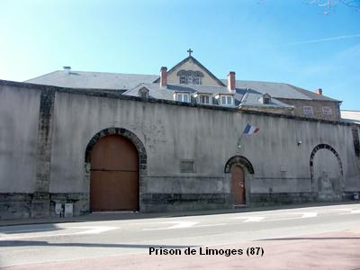
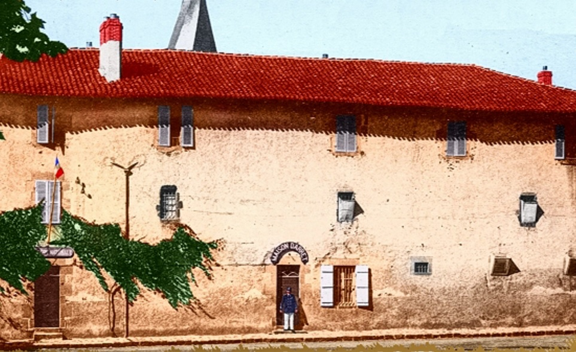
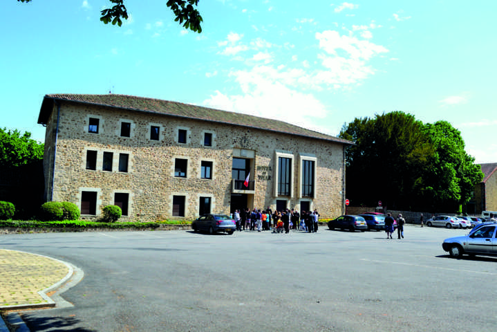

| Département | Images | Ville | Nom | Adresse | Période | Capacité | Histoire du lieu | Nombre d'exécutions |
| Haute-Vienne (87) |  |
Bellac | Maison d'arrêt et de correction | 12, place du Palais | 1828-1926 | Partie intégrante du tribunal, occupant le rez-de-chaussée du bâtiment : la porte d'entrée se trouve sous l'escalier d'accès au palais de justice. Dans les années 1960, l'ancienne prison devient foyer communal, tandis que le tribunal poursuit ses activités jusqu'en 2009. Les bâtiments sont devenus en 2012 la médiathèque Jean Giraudoux. | Aucune exécution | |
| Haute-Vienne (87) |      |
Limoges | Maison d'arrêt, de justice et de correction | 17 bis, place du Champ-de-Foire | En service depuis 1856 | 71 places, 17 surveillants (1962) | A 100 mètres du palais de justice. A sa fondation, peut accueillir jusqu'à 150 detenus, soit en cellules, soit dans des dortoirs. Mise en conformité avec les règles d'enfermement cellulaire, elle dispose au total de 85 cellules et de quatre quartiers - hommes, femmes, mineurs et semi-liberté. Historiquement, la prison de Limoges fut assaillie le 17 avril 1905 par 3000 manifestants venus délivrer des camarades ouvriers enfermés soit disant pour vol. Sera probablement fermée dans les années 2010 et détruite, tant sa vétusté et son emplacement géographique rendent sa réhabilitation improbable. | Cinq exécutions en 1894, 1937, 1947 et 1948. |
| Haute-Vienne (87) |   |
Rochechouart | Maison d'arrêt et de correction | Place du Château | 1819-1926 | Anciennes écuries du château, cédées gratuitement à la ville le 17 septembre 1819, jouxtant la gendarmerie. Devenue depuis la mairie. Une histoire locale est racontée sur la page Rochechouart-Nostalgie (d'où provient également la photo), rubrique "Affaires judiciaires - faits divers", chapitre "Évasion spectaculaire". | Aucune exécution | |
| Haute-Vienne (87) | Saint-Yrieix-la-Perche | Maison d'arrêt et de correction | 1807-1926 | Installée dans une maison du XVIIe siècle. Désaffection prévue à partir de 1864, mais le projet est abandonné et l'endroit simplement rénové en 1868. Le 25 août 1894, Jean Dupuy, chef de bande dangereux, s'évade en creusant un trou dans le mur de sa cellule ! Capacité de 100 détenus. | Aucune exécution |
{kind=link}
{kind=link}
{kind=link}
{kind=link}
{kind=link}
{kind=link}
{kind=link}
{kind=link}